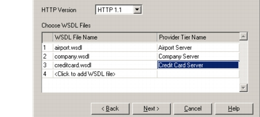
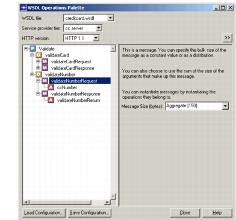
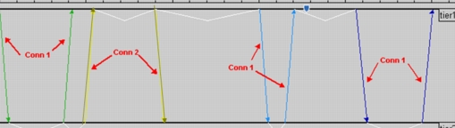
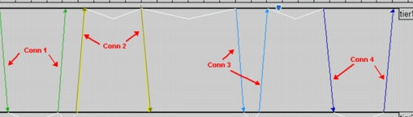

Creating Web Service Operations in Transaction Whiteboard (with WSDL Data) Procedure 27-1 Creating a Web Service Application in Transaction Whiteboard 1 Choose File > Open Model > Transaction Whiteboard. 2 In the first window of the Transaction Whiteboard Startup Wizard, select “Create web service model from WSDL files.” 3 In the second window, specify the names of the tiers; for example, enter “Web Client” in the first row and “Web Server” in the second row. 4 In the third window, do the following: 4.1 Select the HTTP Version (either 1.0 or 1.1). For more information, see HTTP Version. 4.2 Specify each WSDL file that you want to import, and the Transaction Whiteboard tier that will act as the provider for the services defined in that file. Figure 27-1 Transaction Whiteboard Startup Wizard  5 In the fourth (final) window, click Finish. The Transaction Whiteboard model file is created, and the WSDL Operations Palette appears.  5.1 Create operations from the WSDL Operations Palette as described in Procedure 27-2. End of Procedure 27-1 HTTP Version You can specify the HTTP version to be used by the web service model. The HTTP version determines how connections are reused by the SOAP messages. For HTTP 1.1, SOAP messages that originate from the same tier use the same initial connection. In this example, the third and forth transactions use the same connection as the first transaction. Figure 27-2 HTTP 1.1  For HTTP 1.0, SOAP messages establish a new connection for each operation regardless of the communicating tiers. In this example, there is no connection reuse. Figure 27-3 HTTP 1.0  You can set the HTTP version in two places: • In the Transaction Whiteboard Startup Wizard when creating a Transaction Whiteboard model file • In the WSDL Operations Palette when viewing or creating operations